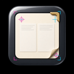

InDesign (DOCUMENTED) includes LIVE Creative Cloud fonts, print RIPs, and package-for-press. This v0 keeps masters, frames, columns, and a toy PDF exporter fully offline — no fabricated LIVE print services.